4th place robot at the Engineering Physics 2020 Robotics Competition
The Challenge: RecycleBots
Due to COVID-19, UBC was closed for the duration of this course. Students were required to purchase tools and fabricate all parts from home. All students created their own competition surface and competed in a livestreamed Zoom competition.
Our team of four was tasked to build 4 fully autonomous robots to find 6 cans on an 8' x 8' surface and place them in a recycling bin within 60 seconds.
To maximize our potential score, our team chose to deposit cans in an 8'' tall bin and pick up cans that are laying in different orientations.
A more detailed overview of the competition can be found here.
Our strategy consisted of:
- dragging the recycling bin using magnets
- tape following for navigating surface
- sonar detection for finding cans
- wheel encoders for precise movements
- servo lifting mechanism
Team funMode(); competed in 5 matches, making it all the way to the final rounds. We ultimately placed 4th out of 16 teams.
Gallery
Full Competition Stream. Defaults to our quarterfinals match: Team 14 - funMode(); vs Team 13 - Third Wheels.
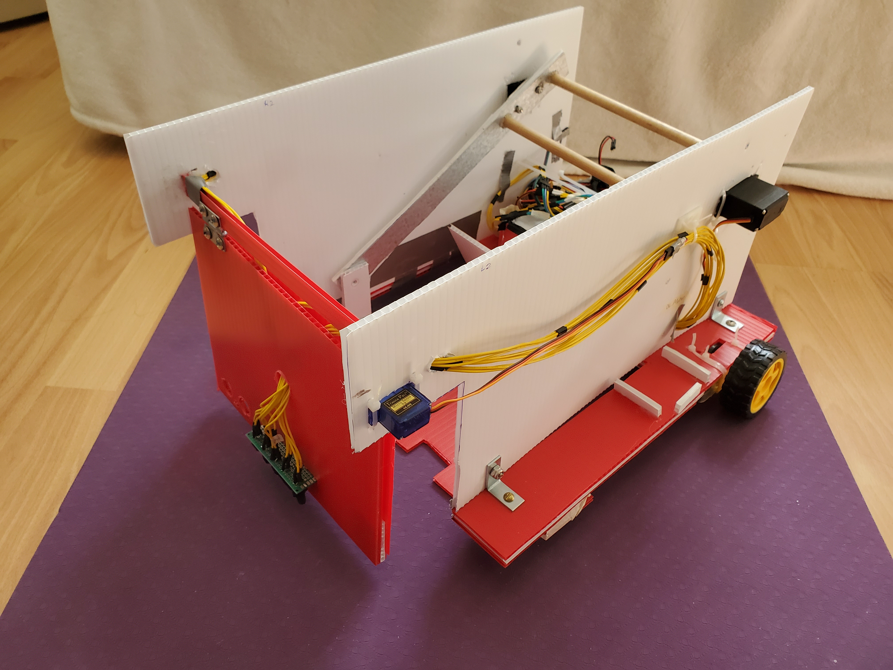
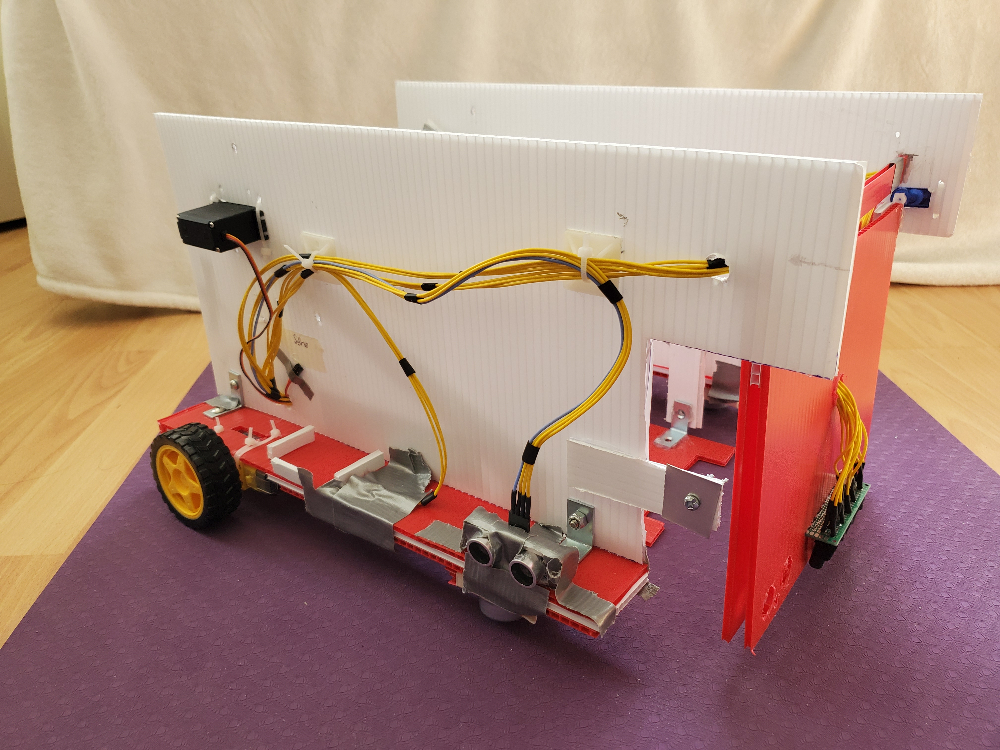
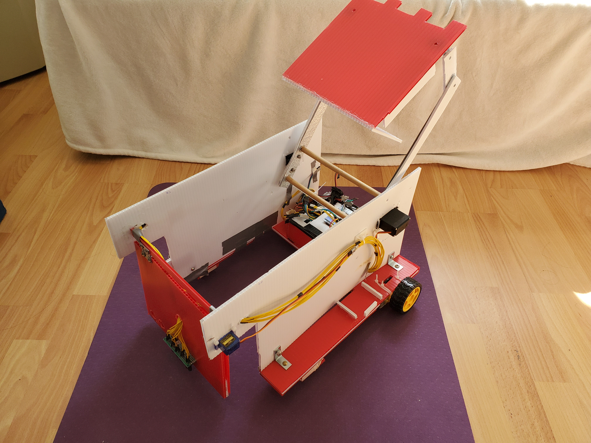
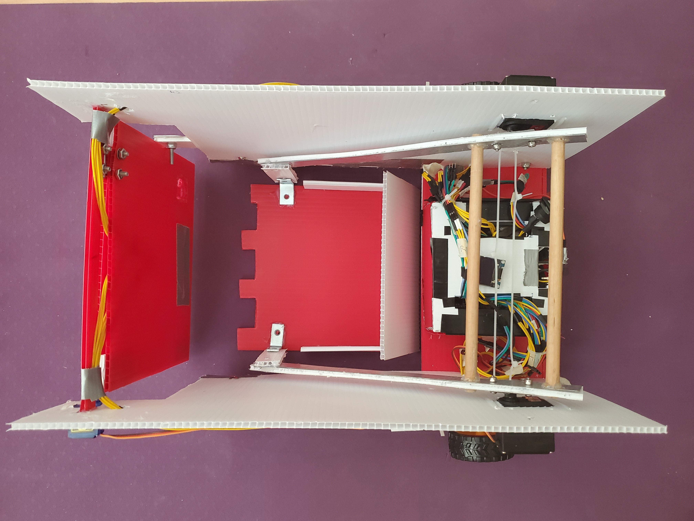
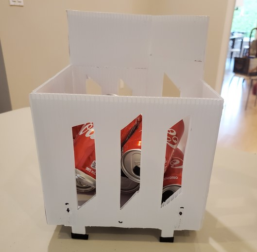
Mechanical
Our robot's mechanical design
Our mechanical systems were initially drafted in OnShape. See our initial CAD prototypes in our design proposal. Due to COVID-19 closures at UBC, we were unable to access 3D printers, waterjet cutters, and laser cutters.
We fabricated all our parts using hand tools and power tools with materials that can be found at any hardware store.
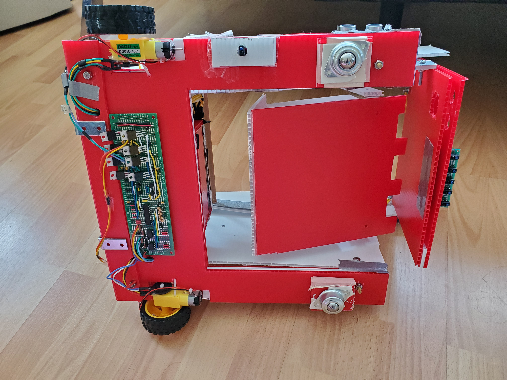
Chassis
Main Body
The chassis of our robot features a large cutout so cans can be retrieved a ground level. Circuits and DC motors are mounted to the bottom of the chassis.
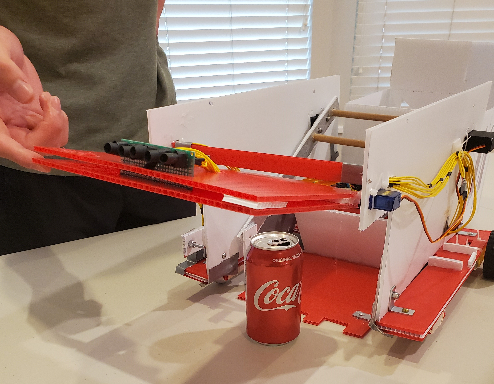
Gate
Method of Can Retrieval
The gate is designed to knock cans laying in any orientation onto the platform.
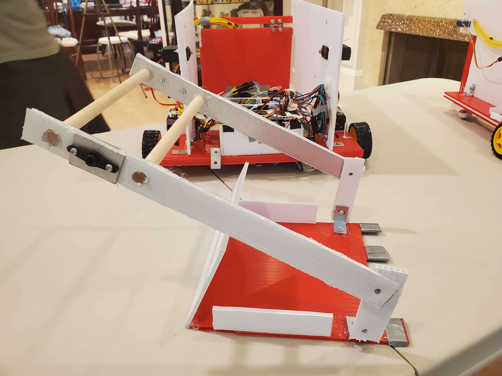
Lift Mechanism
Mechanism for Depositing Cans
Using a pair of servo motors and a platform that lays flat on the ground, we can lift cans from off the ground and deposit them behind our robot.
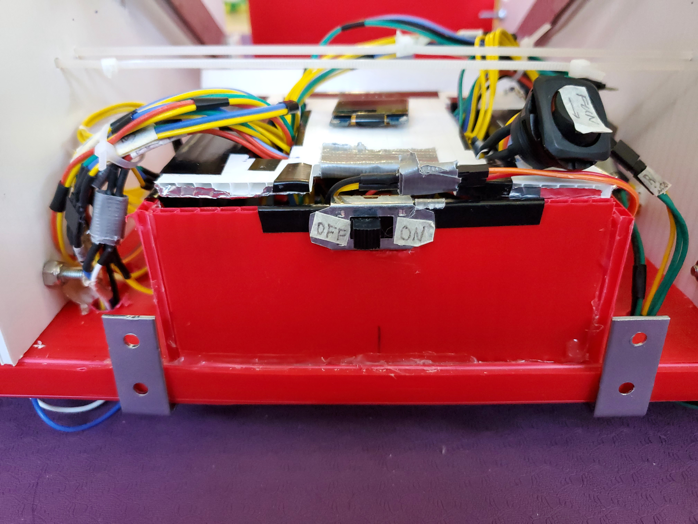
Portable Recycling Bin
Magnetized Bin Attachment
Using ferrous brackets on the back of our bot allows us to quickly attach to a recycling bin and drag it around the surface.
Our code is written in C++ for an STM32 Microcontroller. View the code on our Github repo.
PID Control
Implementing PID control allows us to accurately follow tape autonomously.
Can Retrieval
Using sonar and encoder data, we are able to locate cans, retrieve cans, and return to tape.
Signal Processing
When experimenting with IR detection, a cross-correlation signal processing algorithm was implemented to determine the strength of a 1kHz IR pulse.
Team Members
Team funMode(); is a team of four second-year Engineering Physics students at the University of British Columbia.
Zephaniah Ko
Jeffrey Chan
Christian Malherbe
Michael Villanueva
Power Distribution
We designed a voltage regulator circuit to provide our various circuits, sensors, and actuators with the appropriate voltages. We used 9V batteries for circuits with low current demand. For high current circuits like our H-bridges and servo motors we used 6 AA batteries in series to create a 9V power source. This circuit was built on the same board as our microcontroller.
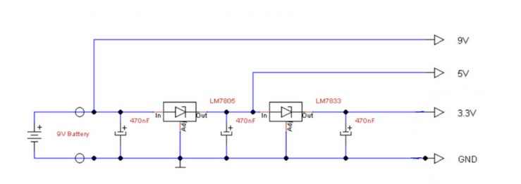
This is an approximate power and ground diagram for all of our robot's systems.
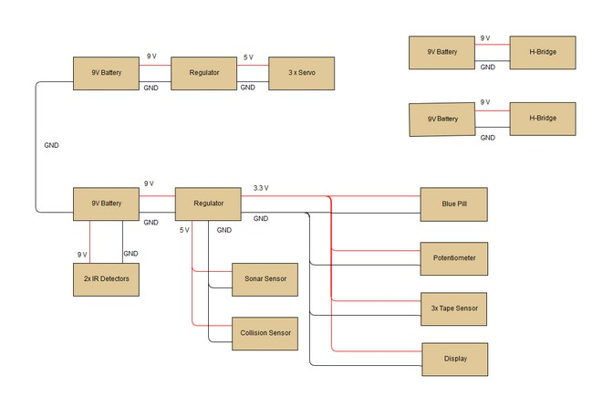
Microcontroller
All of our software is written in C++ on an STM32F103C8 Blue Pill board which has a 32-bit CPU and an ARM Cortex M3 Microcontroller making it superior to Arduino boards. The blue pill is able to drive motors using PWM signals, receive analog inputs from our reflectance sensors using ADC pins, and receive digital inputs from our other sensors (sonars, encoders, digital reflectance sensor).
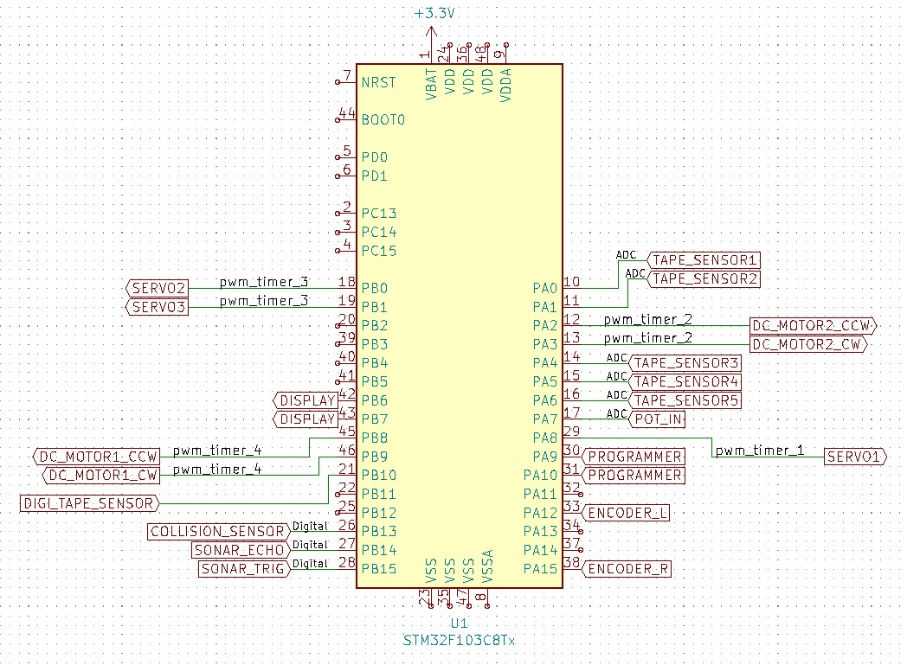
Pinout diagram made using KiCAD
We wired and soldered a PCB with our microcontroller, regulator circuit, encoder circuits, and reflectance sensor circuits. We placed the circuit in a alumminum lined box for shielding from electromagnetic noise and wired up a switch which turns on power to the microcontroller and the motor circuits simulataneously.
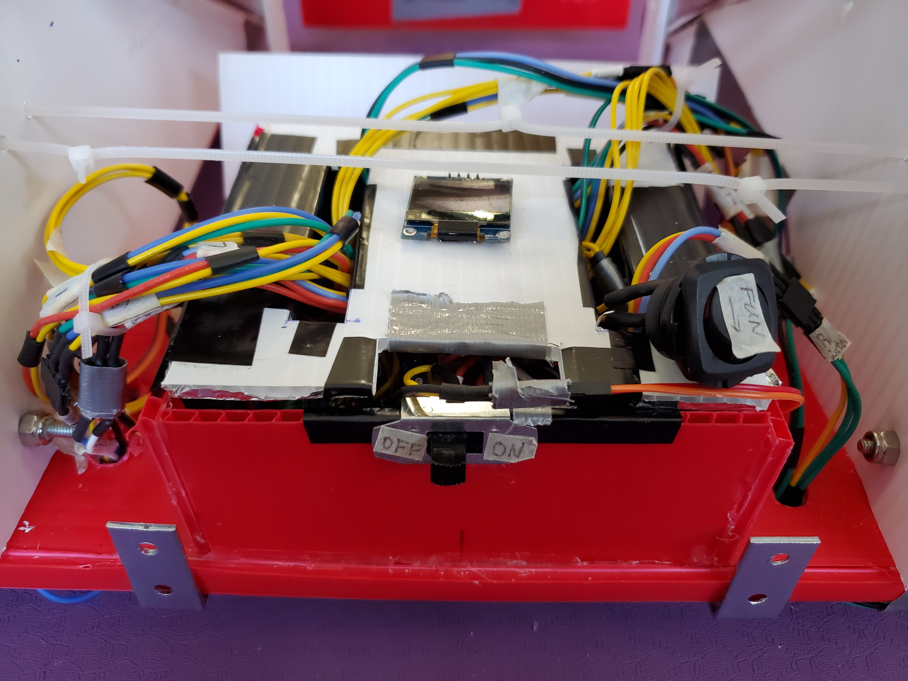
Drivetrain
Dual H-Bridge Circuits, optically isolated from the microcontroller circuit
This is the H-bridge circuit we designed for driving both wheels in either direction. The design features optocouplers so that the noise from the motors will not effect the sensitive microcontroller. PWM outputs from the MCU are optocoupled and then amplified through a gate driver to drive the motors.
This schematic shows the setup for one motor. The full circuit we built has a second motor which shares the same gate driver.
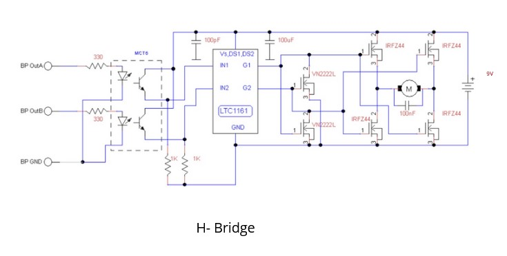
This circuit was soldered onto a board and secured onto the bottom of the chassis.
PID Tape Following
Reflectance Sensor Array.
To follow black tape, we used an array of 5 reflectance sensors. Each reflectance sensor consists of a IR LED and a phototransistor which we can use to input an analog value into the MCU. Since there is a drastic difference in reflectance from black tape to a light-colored floor, we can determine whether or not a sensor is on black tape.
This is the circuit we use to feed analog values into the Blue Pill:
To be sure we could make all the required turns we connected a digital tape sensor on the side of our robot which would read the small tabs of black tape at the corners of our tape path. When this sensor reads the black tape, our robot will execute a turn.
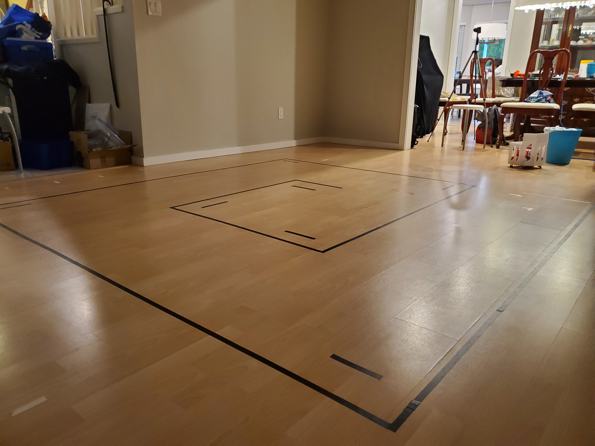
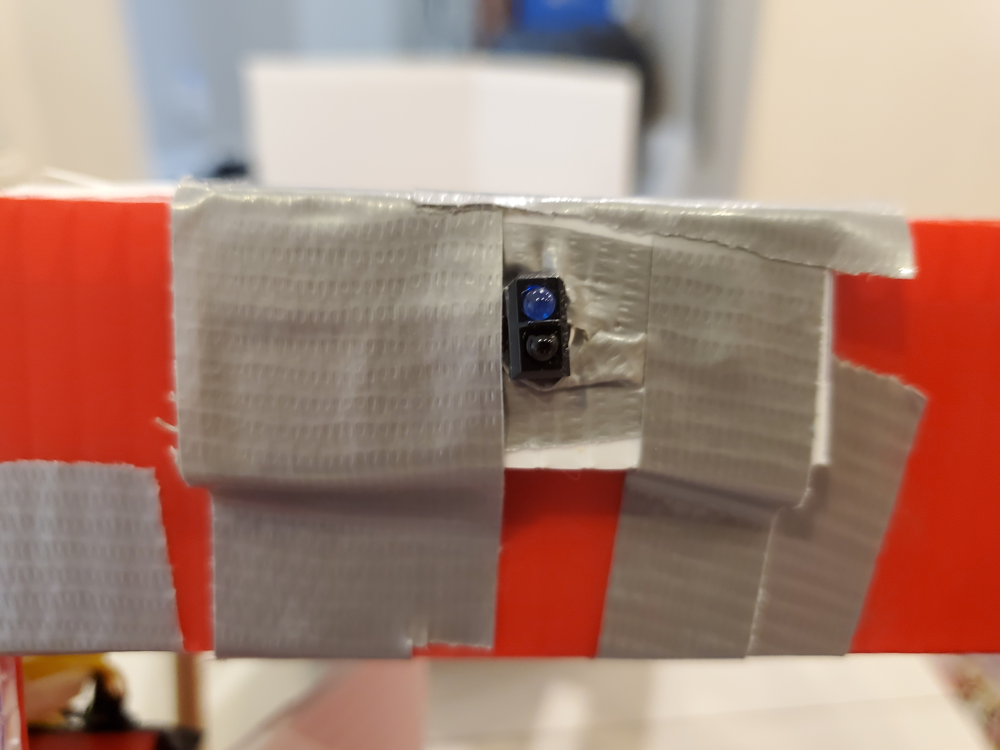
At this point we were out of ADC ports on the MCU so we made a comparator circuit to turn the analog values into a digital value by comparing it to a value set by a voltage divider.
Precision Driving
Photointerrupters and Motor Encoders
Early in our design cycle, we realized it was very difficult to make our robot drive perfectly straight or execute accurate pivots. The motors are controlled by analog values and their speeds are often affected by battery strength.
To move precisely, we installed photointerrupters and an encoder on the motor. By counting the pulses from the photointerrupters we are able to determine how much each wheel has turned. This allows us to pivot accurately, drive forward off of tape, and back up the same amount.
IR Beacon Detection
Amplification and AC Coupling Circuit
Although we scrapped our IR detection strategy for our final design, we had built and tested this feature and felt it was worth highlighting.
The idea behind this feature is to be able to navigate towards an IR LED that is pulsing at 1kHz. We chose to detect an oscillating signal so that we can distinguish the presence of IR signal from ambient light in the room
To find the beacon we built a circuit with a phototransistor that receives the signal, amplifies it, AC couples, and steps down the voltage to below 3.3V to be safely input to the Blue Pill.
This is the circuit we designed and built for this application.
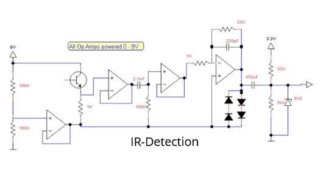
Once the analog signal enters the Blue Pill, we wrote software to process the signal. We used a cross-correlation algorithm which outputs a value indicating how closely the analog signal matches a 1kHz reference wave.
Code for this specific application can be viewed here
This is the circuit we designed to create an 1kHz IR Beacon